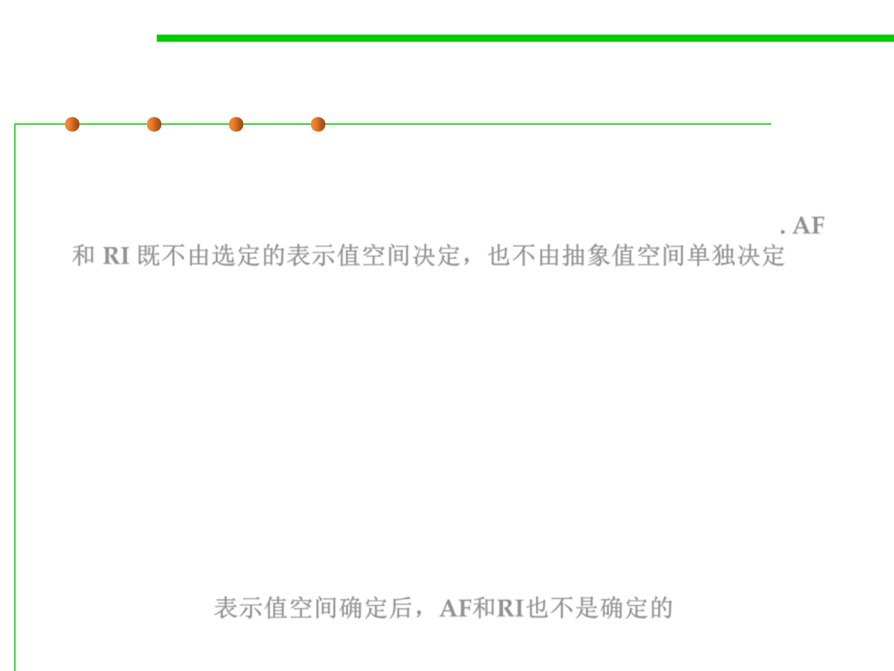

What determine AF and RI?
3.3 Abstract Data Type (ADT)
▪ A common confusion about abstraction functions and rep
invariants is that they are determined by the choice of rep and
abstract value spaces, or even by the abstract value space alone. AF
和 RI 既不由选定的表示值空间决定，也不由抽象值空间单独决定
▪ The abstract value space alone doesn’t determine AF or RI:
– There can be several representations for the same abstract type.
– A set of characters could equally be represented as a string, as above, or as
a bit vector, with one bit for each possible character. Clearly we need two
different abstraction functions to map these two different rep value spaces.
▪ Defining a type for the rep, and thus choosing the values for the
space of rep values, does not determine which of the rep values will
be deemed to be legal, and of those that are legal, how they will be
interpreted. 表示值空间确定后，AF和RI也不是确定的